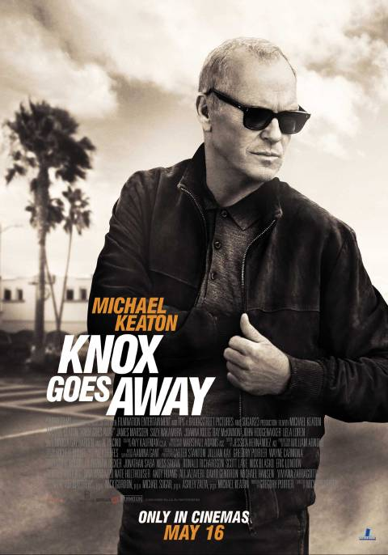

IF: IMAGINARY FRIENDS
Synopsis: John Knox works a day-to-day job as a contract killer employed by Xavier Crane, a crime boss. He is estranged from his wife and son and dates a Cracovian immigrant named Annie, who shares his love for books. Knox is later diagnosed with a fast-moving form of dementiaActors: Michael Keaton, James Marsden, Suzy Nakamura. Al Pacino
Age Restriction: R-18
Showing Times: 12:00, 15:00, 18:00